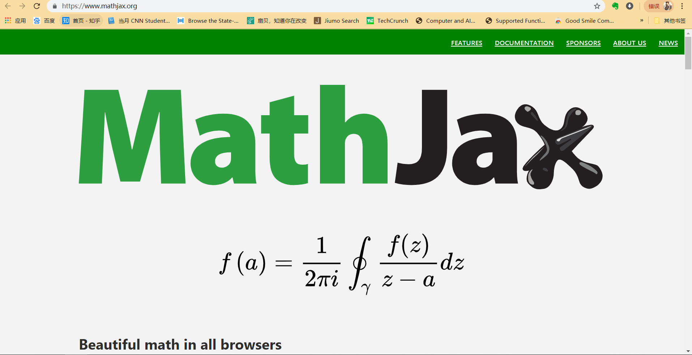

因为公式在博客中不能显示的问题折腾了好几天，在网上找了不少方法，竟然无一能用。有的方法在server中可以显示公式，部署到github上仍旧是一串LateX代码。我猜这应该是js的渲染有问题，或者没有后端正确地加载js库。由于我不是前端程序员，背后的原理并没有弄得很懂。在我一筹莫展之时，得知在md文本中可以直接插入js代码，虽然简单粗暴，但的确行之有效，只在需要用到公式的文本中添加js代码也能很好地节约资源。
1 MathJax简介
这里对数学符号用的渲染引擎是MathJax，使用MathJax可以方便的在浏览器中显示数学公式，它可以解析Latex、MathML和ASCIIMathML的标记语言。
关于MathJax以及LaTex的基础用法可以参考文章（时间关系，有空补充）：
MathJax basic tutorial and quick reference
Mathjax与LaTex公式简介
2 在page中使用MathJax
-
首先进入MathJax官网
 -
在Documentation中选择 Learn more，并翻到下面的 “Jump to our docs”。

-
在出来的docs页面中找到如下实例代码，复制其中script标签内的内容，贴到你的markdown文本之中（我习惯放在最后）。

-
关键！把src的内容替换为
1 | https://cdnjs.cloudflare.com/ajax/libs/mathjax/2.7.4/latest.js?config=TeX-MML-AM_CHTML |
所以最后的代码应为：
1 | <script type="text/x-mathjax-config"> |
3 测试
大功告成！来测试一下：
行间公式（使用displayed分隔符）
1 | $$\sum_{i=0}^n i^2 = \frac{(n^2+n)(2n+1)}{6}$$ |
效果：
\[\sum_{i=0}^n i^2 = \frac{(n^2+n)(2n+1)}{6}\]
行内公式（使用inline分隔符）
1 | $\sum_{i=0}^n i^2 = \frac{(n^2+n)(2n+1)}{6}$ |
效果：
这是行内公式：$\sum_{i=0}^n i^2 = \frac{(n^2+n)(2n+1)}{6}$。
赏
 支付宝打赏
支付宝打赏
 微信打赏
微信打赏
赞赏一下